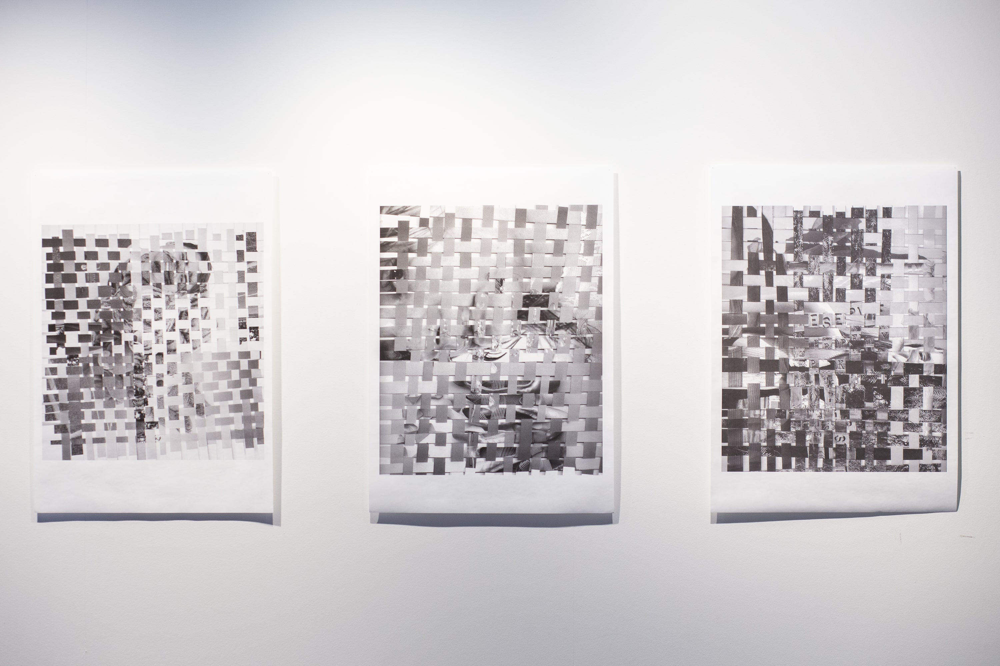
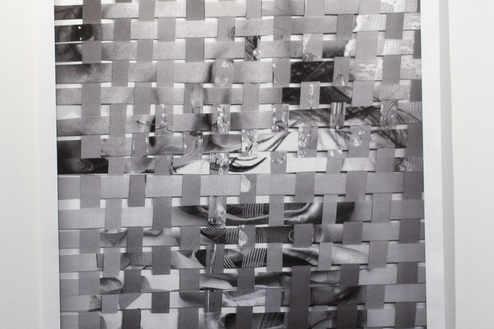

Cherished (2022)
Amy McGrath
Hand Woven Prints
‘Cherished’ is a triptych portrait series. The series contains hand woven collages displayed as A1 prints.
This series aims to evoke a feeling of nostalgia and love for your own childhood.
The people pictured were asked to pick things from their personal archives and memory’s that hold a great significance to them.
The final artworks contain a place that each person feels bring them a sense of nostalgia, as well as an item they have held onto throughout their lives thus far.
The featured images contain a self portrait, a portrait of the artist’s brother and her childhood best friend.
The three of these people have a shared lived experience growing up in the same suburb and have interconnecting emotions, shaping who they have grown into today.


'Cherished', 2022 (Detail), Image Courtesy the Artist